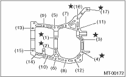
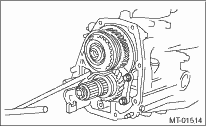
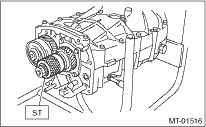
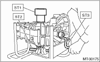
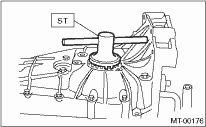
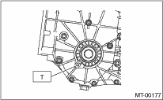
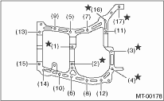
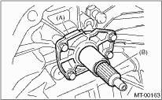

1. Wipe off grease, oil and dust on the mating surfaces of transmission cases with cleaning solvent.
2. Install the front differential assembly.
3. Install the main shaft assembly.
Install the transmission case knock pin into the knock pin hole of needle bearing.
4. Install the drive pinion shaft assembly.
Install the transmission case knock pin into the roller bearing knock pin hole.
5. Apply liquid gasket, and then join the right side and left side of the case together.
Liquid gasket
THREE BOND 1215 (Part No. 004403007) or equivalent
6. Tighten the bolt together with the bracket and the clip, as shown in the figure.
NOTE:
• Insert the 10 mm bolts from the bottom and tighten the nuts at the top.
• Put the cases together so that the drive pinion shim and input shaft holder shims are not caught in between.
• Confirm that speedometer gear is meshed properly.
Tightening torque:
8 mm bolt
25 N·m (2.5 kgf-m, 18.1 ft-lb)
10 mm bolt
39 N·m (4.0 kgf-m, 28.9 ft-lb)

7. Tighten the bearing mounting bolts.
Tightening torque:
30 N·m (3.1 kgf-m, 22.1 ft-lb)

8. Perform backlash adjustment of the hypoid gear and preload measurement of the roller bearing:
NOTE:
Support the drive pinion assembly with the ST.
| ST 498427100 | STOPPER |

9. Place the transmission with the left side of case facing downward, and put ST1 on bearing cup.
10. Screw the retainer assembly from the bottom into left case using ST2. Fit the ST3 on transmission main shaft. Shift the gear into 4th or 5th, and turn the shaft several times. Screw in the retainer while rotating the ST3 until a slight resistance is felt on ST2.
This is the contact point of the hypoid gear and the drive pinion shaft. Repeat the above sequence several times to ensure the contact point.
| ST1 399780104 | WEIGHT |
| ST2 18630AA010 | WRENCH COMPL RETAINER |
| ST3 499927100 | HANDLE |

11. With the O-ring on the upper side removed, remove the retainer weight and screw, and stop at a point where a slight resistance is felt.
NOTE:
At this point, the backlash between the hypoid gear and drive pinion shaft is zero.
| ST 18630AA010 | WRENCH COMPL RETAINER |

12. Loosen the retainer on the lower side by three notches of the lock plate, and turn the retainer on the upper side by the same amount in order to obtain the backlash.
13. Rotate the retainer of the upper side additionally by 1 notch in order to apply preload on taper roller bearing.
14. Tighten temporarily both the upper and lower lock plates, and put marks both the holder and lock plate for later readjustment.
NOTE:
When there is difficulty in attaching the lock plate, attach it inside out.
15. Turn the transmission main shaft several times while tapping around the retainer lightly with plastic hammer.
16. Inspect and adjust backlash and tooth contact of the hypoid gear. 
17. After checking the tooth contact of the hypoid gears, remove the lock plate. Then loosen the retainer until the O-ring groove appears. Fit the O-ring into the groove and tighten the retainer into the original position before being loosened.
Install the lock plate.
NOTE:
• When loosing the retainer, record the number of turns made.
• Perform this for both upper and lower retainers.
Tightening torque:
T: 25 N·m (2.5 kgf-m, 18.1 ft-lb)

18. Selection of the main shaft rear plate
19. Install the clutch release lever and bearing.
20. Install the transfer case together with the extension case assembly.
21. Install the manual transmission assembly to the vehicle.
1. Wipe off grease, oil and dust on the mating surfaces of transmission cases with white gasoline.
2. Install the front differential assembly.
3. Install the main shaft assembly and input shaft assembly.
Connect the main shaft assembly and input shaft assembly, and install the transmission case knock pin to the needle bearing knock pin hole.
4. Install the drive pinion shaft assembly.
Install the transmission case knock pin into the roller bearing knock pin hole.
5. Apply liquid gasket, and then join the right side and left side of the case together.
Liquid gasket
THREE BOND 1215 (Part No. 004403007) or equivalent
6. Tighten the 17 bolts together with the brackets and the clips, as shown in the figure.
NOTE:
• Insert the bolts from the bottom and tighten the nuts at the top.
• Put the cases together so that the drive pinion shim and input shaft holder shims are not caught in between.
• Confirm that speedometer gear is meshed properly.
Tightening torque:
8 mm bolt
25 N·m (2.5 kgf-m, 18.1 ft-lb)
10 mm bolt
39 N·m (4.0 kgf-m, 28.9 ft-lb)

7. Tighten the bearing attachment bolts.
Tightening torque:
30 N·m (3.1 kgf-m, 22.1 ft-lb)
8. Tighten the input shaft holder attachment bolts.
Tightening torque:
20 N·m (2.0 kgf-m, 14.8 ft-lb)

|
(A) |
Input shaft holder |
|
(B) |
Input shaft |
9. Using the ST, support the drive pinion assembly and adjust the backlash of the hypoid gear, and measure the preload of the roller bearing.
| ST 498427100 | STOPPER |
10. Place the transmission with the left side of case facing downward, and put ST1 on bearing cup.
11. Screw in the retainer assembly from the bottom into left case using ST2. Fit the ST3 on transmission main shaft. Shift the gear into 4th or 5th, and turn the shaft several times. Screw in the retainer while rotating the ST3 until a slight resistance is felt on ST2.
This is the contact point of the hypoid gear and the drive pinion shaft. Repeat the above sequence several times to ensure the contact point.
| ST1 399780104 | WEIGHT |
| ST2 18630AA010 | WRENCH COMPL RETAINER |
| ST3 499927100 | HANDLE |
12. With the O-ring on the upper side removed, remove the retainer weight and screw, and stop at a point where a slight resistance is felt.
NOTE:
At this point, the backlash between the hypoid gear and drive pinion shaft is zero.
| ST 18630AA010 | WRENCH COMPL RETAINER |
13. Loosen the retainer on the lower side by three notches of the lock plate, and turn the retainer on the upper side by the same amount in order to obtain the backlash.
14. Rotate the retainer of the upper side additionally by 1 notch in order to apply preload on taper roller bearing.
15. Tighten temporarily both the upper and lower lock plates, and put marks both the holder and lock plate for later readjustment.
NOTE:
When there is difficulty in attaching the lock plate, attach it inside out.
16. Turn the transmission main shaft several times while tapping the area around the retainer lightly with plastic hammer.
17. Inspect and adjust backlash and tooth contact of the hypoid gear.
18. After checking the tooth contact of the hypoid gears, remove the lock plate. Then loosen the retainer until the O-ring groove appears. Fit the O-ring into the groove and tighten the retainer into the original position before being loosened.
Install the lock plate.
NOTE:
• When loosing the retainer, record the number of turns made.
• Perform this for both upper and lower retainers.
Tightening torque:
T: 25 N·m (2.5 kgf-m, 18.1 ft-lb)
19. Selection of the main shaft rear plate
20. Install the transfer case together with the extension case assembly.
21. Install the clutch release lever and bearing.
22. Install the manual transmission assembly to the vehicle.